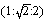

Im Timaios tritt die Idee in ihrer Bestimmtheit näher ausgedrückt hervor; die Grundbestimmungen von der Naturphilosophie des Platon sind im Timaios enthalten. Allein auf das Nähere, Spezielle können wir uns nicht einlassen; es hat indessen auch wenig Interesse. Von den Pythagoreern hat Platon viel aufgenommen; wieviel ihnen angehöre, ist nicht genau zu beurteilen. Der Timaios ist ohne Zweifel die Umarbeitung eines eigentlich von einem Pythagoreer verfaßten Werks. Andere haben auch gesagt, dies sei nur ein Auszug, den ein Pythagoreer gemacht habe aus dem größeren Werke Platons. Aber das erste ist das Wahrscheinlichere. Der Timaios hat zu allen Zeiten für den schwersten und dunkelsten unter den Platonischen Dialogen gegolten. (Besonders, wo er auf Physiologie hinausgeht, entspricht das Vorgetragene unseren Kenntnissen gar nicht, wenn wir auch Platons treffliche, von den Neueren nur zu sehr verkannte Blicke bewundern müssen.) Diese Schwierigkeit ist α) teils die äußere schon bemerkte Vermischung des begreifenden Erkennens und Vorstellens, wie wir gleich pythagoreische Zahlen eingemischt sehen werden, β) vorzüglich aber die philosophische Beschaffenheit der Sache selbst, über die Platon noch kein Bewußtsein hatte. Diese andere Schwierigkeit ist die Anordnung des Ganzen. Was nämlich sogleich daran auffällt, ist, daß Platon mehrmals sich unterbricht, oft umzukehren und wieder von vorne anzufangen scheint. Dies hat Kritiker, z. B. selbst [F. A.] Wolf in Halle und andere, die es nicht philosophisch zu nehmen wissen, bewogen, es für eine Sammlung und Zusammenstellung von Fragmenten oder mehreren Werken zu nehmen, die nur äußerlich so zusammengeheftet worden oder wo in das Platonische vieles Fremde eingeschoben worden wäre. (Wolf meinte in mündlichen Unterredungen hieraus zu erkennen, daß dieser Dialog, gleich wie sein Homer, aus verschiedenen Stücken zusammengesetzt sei.) Allein obzwar der Zusammenhang unmethodisch erscheint, Platon selbst dieser Verwicklung wegen gleichsam häufig seine Entschuldigungen macht, so werden wir im Ganzen sehen, wie es notwendig auseinanderfällt und was die Rückkehr gleichsam zum Anfang notwendig macht. (Für diese mehrmalige Rückkehr kann man einen tieferen Grund angeben.)
Die Darlegung des Wesens der Natur oder des Werdens der Welt leitet Platon nun auf folgende Weise ein: "Gott ist das Gute" (τὸ ἀγαϑόν, das Gute steht an der Spitze der Platonischen Ideen, wie denn Aristoteles von den Ideen und vom Guten geschrieben hat, worin er die Platonische Lehre abgehandelt hat), "das Gute hat aber auf keinerlei Weise irgendeinen Neid in sich; deswegen hat er die Welt sich am Ähnlichsten machen wollen" (29). Gott ist hier noch ohne Bestimmung; Platon fängt indessen im Timaios mehrmals so von vorne an. Daß Gott keinen Neid habe, ist allerdings ein großer, schöner, wahrhafter, naiver Gedanke. Bei den Älteren dagegen ist die Nemesis, Dike, das Schicksal, der Neid die einzige Bestimmung der Götter, daß sie das Große herabsetzen, kleinmachen, das Würdige, Erhabene nicht leiden können. Die späteren edlen Philosophen bestritten dies. In der bloßen Vorstellung der Nemesis ist noch keine sittliche Bestimmung enthalten. Die Strafe, das Geltendmachen des Sittlichen gegen das Unsittliche ist eine Herabsetzung dessen, was das Maß überschreitet; aber dies Maß ist noch nicht als das Sittliche vorgestellt. Platons Gedanke ist weit höher als die Ansicht der meisten Neueren, welche, indem sie sagen, Gott sei ein verschlossener Gott, habe sich nicht offenbart und man wisse von Gott nicht, der Gottheit Neid zuschreiben. Denn warum sollte er sich nicht offenbaren, wenn wir einigen Ernst machen wollten mit Gott? Ein Licht verliert nichts, wenn anderes angezündet wird; so war Strafe in Athen auf das Nicht-Erlauben gesetzt. Wird die Erkenntnis Gottes uns verwehrt, so daß wir nur Endliches erkennen, das Unendliche nicht erreichen, so wäre er neidisch, oder Gott ist dann leerer Name. Denn sonst heißt es nichts weiter als: das Höhere von Gott wollen wir auf der Seite liegen lassen und unseren kleinlichen Interessen, Ansichten usf. nachgehen. Diese Demut ist Frevel, Sünde gegen den Geist.
Gott ist also nach Platon ohne Neid. Er fährt fort: "Er fand nun das Sichtbare vor (παϱαλαβών)" - ein mythischer Ausdruck, aus dem Bedürfnis hervorgegangen, mit etwas Unmittelbarem anzufangen, das man aber, wie es sich so präsentiert, durchaus nicht gelten lassen kann -, "nicht als ruhig, sondern zufällig und unordentlich bewegt, und brachte es aus der Unordnung in die Ordnung, indem er diese für vortrefflicher als jene erachtete." Hiernach sieht es so aus, als habe Platon angenommen, Gott sei nur der δημιου ͂ϱγος, der Ordner der Materie, und diese als ewig, selbständig von ihm vorgefunden, als Chaos. Diese Verhältnisse sind aber nicht Philosopheme, Dogmen des Platon, es ist ihm nicht Ernst damit; dieses ist nur nach der Vorstellung gesprochen, solche Ausdrücke haben keinen philosophischen Gehalt. Es ist nur die Einleitung des Gegenstandes, um zu solchen Bestimmungen einzuführen, wie die Materie ist. Wir müssen wissen, daß, wenn wir in der Philosophie mit Gott, Sein, Raum, Zeit usf. anfangen, auf unmittelbare Weise davon sprechen, dies selbst ein Inhalt ist, der seiner Natur nach unmittelbar ist, zunächst nur unmittelbar ist; und wir müssen wissen, daß diese Bestimmungen als unmittelbar zugleich in sich unbestimmt sind. So ist Gott unbestimmt, für den Gedanken leer. Platon kommt dann in seinem Fortgange zu weiteren Bestimmungen, und diese sind erst die Idee. Wir müssen uns an das Spekulative Platons halten. Er sagt, Gott achtete die Ordnung für vortrefflicher; dies ist die Manier eines naiven Ausdrucks. Bei uns würde man gleich fordern, Gott erst zu beweisen; ebensowenig würde man das Sichtbare statuieren. Bei Platon ist dies mehr nur naive Weise; was daraus bewiesen wird, ist erst die wahrhafte Bestimmung, die Bestimmung der Idee, die erst später hervorkommt. Er fährt fort: Gott überlegend, daß von dem Sichtbaren (Sinnlichen) das Unverständige (ἀνόητον) nicht schöner sein könne als das Vernünftige, der Verstand (νου ͂ς) aber ohne Seele mit nichts teilhaben könne, - nach diesem Schlusse setzte er den Verstand in die Seele, die Seele aber in den Körper, weil der Verstand nicht teilnehmen könnte am Sichtbaren ohne Körper, "und schloß sie so zusammen, daß die Welt ein beseeltes, verständiges Tier geworden ist" (30). (Wir haben Ähnliches im Phaidros gesehen.) Wir haben Realität und νου ͂ς - und die Seele, das Band dieser beiden Extreme; dies ist das ganz Wahrhafte, Reale.
"Es ist aber nur ein solches Tier. Denn wenn es zwei oder mehrere wären, so wären diese nur Teile des Einen und nur Eines." (31)
Nun geht Platon sogleich zuerst an die Bestimmung der Idee des körperlichen Wesens: "Weil die Welt leiblich, sichtbar und betastbar werden sollte, ohne Feuer aber nichts gesehen werden kann und ohne Festes, ohne Erde aber nichts betastet werden kann, so machte Gott im Anfang gleich das Feuer und die Erde." Auf kindliche Weise führt Platon diese ein. "Zwei allein aber können nicht ohne ein Drittes vereinigt sein, sondern es muß ein Band in der Mitte sein, das sie beide zusammenhält" (einer der reinen Ausdrücke des Platon); "der Bande schönstes aber ist, welches sich selbst und das, was von ihm zusammengehalten wird, aufs Höchste eins macht." Das ist tief; da ist der Begriff, die Idee enthalten. Das Band ist das Subjektive, Individuelle, die Macht; es greift übers Andere und macht sich mit ihm identisch. "Dieses bewerkstelligt die Analogie (das stetige Verhältnis) am schönsten." Analogie aber ist: "Wenn von drei Zahlen oder Massen oder Kräften dasjenige, welches die Mitte ist, sich wie das Erste zu ihm, so es sich zum Letzten verhält, und umgekehrt wie das Letzte zur Mitte, so diese Mitte zum Ersten" (a : b = b : c), "indem dann diese Mitte das Erste und Letzte geworden und das Letzte und Erste umgekehrt beide zu Mittleren, so erfolgt, daß alle nach der Notwendigkeit dasselbe sind" (das ist Unterschied, der keiner ist); "wenn sie aber dasselbe geworden, so wird alles eins sein." (31-32) Das ist vortrefflich, das behalten wir noch jetzt in der Philosophie.
Diese Diremtion, von der Platon ausgeht, ist der Schluß, der aus dem Logischen bekannt ist. Dieser Schluß bleibt die Form, wie sie im gewöhnlichen Syllogismus erscheint, aber als das Vernünftige. Die Unterschiede sind die Extreme, und die Identität ist es, die sie zu Einem macht. Der Schluß ist das Spekulative, welches sich in den Extremen mit sich selbst zusammenschließt, indem alle Termini alle Stellen durchlaufen. Im Schluß ist die ganze Vernünftigkeit, Idee enthalten, wenigstens äußerlich. Es ist daher Unrecht, vom Schluß schlecht zu sprechen und ihn nicht anzuerkennen als höchste absolute Form. In Hinsicht des Verstandesschlusses hat man dagegen Recht, ihn zu verwerfen. Dieser hat keine solche Mitte; jeder der Unterschiede gilt da als selbständig, verschieden in eigener selbständiger Form, eine eigentümliche Bestimmung gegen das Andere habend. Dies ist in der Platonischen Philosophie aufgehoben, und das Spekulative macht darin die eigentliche, wahrhafte Form des Schlusses aus. Die Mitte macht die Extreme aufs Höchste eins; sie bleiben nicht selbständig, weder gegen sich noch gegen die Mitte. Die Mitte wird die beiden Extreme, und diese werden zur Mitte; dann erfolgt erst, daß alle nach der Notwendigkeit dasselbe sind und so die Einheit konstituiert ist. Im Verstandesschluß dagegen ist diese Einheit nur die Einheit wesentlich unterschieden Gehaltener, die so bleiben; hier wird ein Subjekt, eine Bestimmung zusammengeschlossen mit einer anderen oder gar "ein Begriff mit einem anderen" durch die Mitte. Aber die Hauptsache ist die Identität, oder daß das Subjekt in der Mitte mit sich selbst zusammengeschlossen wird, nicht mit einem Anderen. Im Vernunftschluß ist so vorgestellt ein Subjekt, ein Inhalt durch das Andere und im Anderen sich mit sich selbst zusammenschließend; dies liegt darin, daß die Extreme identisch geworden sind, - das eine schließt sich mit dem anderen, aber als ihm identisch, zusammen. Dies ist mit anderen Worten die Natur Gottes. Wird Gott zum Subjekt gemacht, so ist es dies, daß er seinen Sohn, die Welt erzeugt, sich realisiert in dieser Realität, die als Anderes erscheint, aber darin identisch mit sich bleibt, den Abfall vernichtet und sich in dem Anderen nur mit sich selbst zusammenschließt; so ist er erst Geist. Wenn man das Unmittelbare erhebt über das Vermittelte und dann sagt, Gottes Wirkung sei unmittelbar, so hat dies einen guten Grund; aber das Konkrete ist, daß Gott ein Schluß ist, der sich mit sich selbst zusammenschließt. Das Höchste ist so in der Platonischen Philosophie enthalten. Es sind zwar nur reine Gedanken, die aber alles in sich enthalten; und in allen konkreten Formen kommt es allein auf die Gedankenbestimmungen an. Diese Formen haben seit Platon ein paar tausend Jahre brachgelegen; in die christliche Religion sind sie nicht als Gedanken übergegangen, ja man hat sie sogar als mit Unrecht hinübergenommene Ansichten betrachtet, bis man in neueren Zeiten angefangen hat, zu begreifen, daß Begriff, Natur und Gott in diesen Bestimmungen enthalten sind.
Platon fährt nun fort: In diesem Felde des Sichtbaren waren also als Extreme Erde und Feuer, das Feste und das Belebte. "Weil das Feste zwei Mitten braucht" (wichtiger Gedanke; statt Drei haben wir im Natürlichen Vier, die Mitte ist gedoppelt), "weil es nicht nur Breite, sondern auch Tiefe hat" (eigentlich vier Dimensionen, indem der Punkt durch Linie und Fläche mit dem soliden Körper zusammengeschlossen ist), "so hat Gott zwischen das Feuer und die Erde Luft und Wasser gesetzt" (wieder eine Bestimmung mit logischer Tiefe, da diese Mitte, als das Differente in seinem Unterschied nach den beiden Extremen hingekehrt, in sich selbst unterschieden sein muß), "und zwar nach einem Verhältnisse, so daß sich das Feuer zur Luft wie die Luft zum Wasser und ferner die Luft zum Wasser wie das Wasser zur Erde verhält." (32) Wir finden so eine gebrochene Mitte, und die Zahl Vier, die hier vorkommt, ist in der Natur eine Hauptgrundzahl. Die Ursache, daß das, was im vernünftigen Schluß nur Dreiheit ist, in der Natur zur Vierheit übergeht, liegt im Natürlichen, indem nämlich das, was im Gedanken unmittelbar eins ist, in der Natur auseinandertritt. Die Mitte nämlich als Gegensatz ist eine gedoppelte. Das Eine ist Gott, das Zweite, das Vermittelnde, ist der Sohn, das Dritte ist der Geist; hier ist die Mitte einfach. Aber in der Natur ist der Gegensatz, damit er als Gegensatz existiere, selbst ein Doppeltes; so haben wir, wenn wir zählen, Vier. Dies findet auch bei der Vorstellung von Gott statt. Indem wir sie auf die Welt anwenden, so haben wir als Mitte die Natur und den existierenden Geist - die Natur als solche und der existierende Geist, die Rückkehr der Natur, der Weg der Rückkehr -, und das Zurückgekehrtsein ist der Geist. Dieser lebendige Prozeß - dies Unterscheiden und das Unterschiedene identisch mit sich zu setzen -, dies ist der lebendige Gott.
Platon sagt weiter: "Durch diese Einheit ist die sichtbare und berührbare Welt gemacht worden. Dadurch, daß Gott ihr diese Elemente" (Feuer usf. hat hier eigentlich keine Bedeutung) "ganz und ungeteilt gegeben hat, ist sie vollkommen, altert und erkrankt nicht. Denn Alter und Krankheit entstehen nur daraus, daß auf einen Körper solche Elemente im Übermaße von außen wirken. Dies aber ist so nicht der Fall; denn die Welt enthält sie selbst ganz in sich, und es kann nichts von außen kommen. Die Gestalt der Welt ist die kugelige" (wie sonst bei Parmenides und den Pythagoreern), "als die vollkommenste, welche alle anderen in sich enthält; sie ist vollkommen glatt, denn es ist für sie nichts nach außen, kein Unterschied gegen Anderes, sie braucht keine Glieder." Die Endlichkeit besteht darin, daß ein Unterschied, eine Äußerlichkeit ist für irgendeinen Gegenstand. In der Idee ist auch die Bestimmung, das Begrenzen, Unterscheiden, das Anderssein, aber zugleich aufgelöst, enthalten, gehalten in dem Einen; so ist es ein Unterschied, wodurch keine Endlichkeit entsteht, sondern zugleich aufgehoben ist. Die Endlichkeit ist so im Unendlichen selbst; - dies ist ein großer Gedanke. "Gott hat nun der Welt die angemessenste Bewegung von den sieben gegeben, nämlich diejenige, welche am meisten zum Verstande und Bewußtsein paßt, die Kreisbewegung; die sechs anderen hat er von ihr abgesondert und sie von ihrem ungeordneten Wesen" (vorwärts und rückwärts) "befreit." (32-34) Dies ist nur im allgemeinen gesagt.
Ferner: "Da Gott die Welt sich ähnlich, sie zum Gotte machen wollte, so hat er ihr die Seele gegeben und diese in die Mitte gesetzt und durch das Ganze ausgebreitet" (Weltseele) "und dies auch von außen durch sie umschlossen" (es ist so die Welt eine Totalität) "und auf diese Weise dies sich selbst genügende, keines Anderen bedürftige, sich selbst bekannte und befreundete Wesen zustande gebracht. Und so hat Gott durch alles dieses die Welt als einen seligen Gott geboren." (34) Wir können sagen: Hier hat Platon nun bestimmte Vorstellung von Gott, erst hier ist das Wahrhafte, die Erkenntnis der Idee. Aber der erste Gott ist noch unbestimmt. Wir müssen mit Bewußtsein diesen Weg nehmen, mit Bewußtsein, daß das Erste, es sei Sein oder Gott, unbestimmt ist. Dieser erzeugte Gott ist erst das Wahrhafte; jener erste ist ein Wort, - angefangen nach der Weise der reinen Vorstellung zu sprechen, als bloße Hypothesis, Voraussetzung der Vorstellung. Als Gott nur das Gute war, war er nur Name, noch nicht als sich selbst bestimmend und bestimmt. Die Mitte ist also das Wahrhafte. Haben wir daher zuerst von einer Materie angefangen und wollte man danach meinen, Platon hätte die Materie für selbständig gehalten, so ist dies nach dem eben Angeführten falsch. Das Anundfürsichseiende, das Selige ist erst dieser Gott, diese Identität.
"Wenn wir nun von der Seele zuletzt gesprochen haben, so ist sie", sagt Platon, "deswegen doch nicht das Letzte, sondern dies kommt nur unserer Sprechweise zu; sie ist das Herrschende, das Königliche, - das Körperliche aber, das ihr Gehorchende" ist nicht das Selbständige, Ewige. Das ist die Naivität Platons; er schreibt es der Sprechweise zu. Was hier als zufällig erscheint, ist dann wieder notwendig: mit dem Unmittelbaren anzufangen und dann erst zum Konkreten zu kommen. Man kann also, wie bereits bemerkt ist, in solchen Darstellungen Platons Widersprüche aufzeigen; aber es kommt darauf an, was er gibt für das Wahrhafte. Näher wird uns die Natur der Platonischen Idee folgendes zeigen. Platon sagt nämlich: "Das Wesen der Seele aber ist auf folgende Weise beschaffen worden." Hier ist eigentlich wieder dieselbe Idee als bei dem Wesen des Körperlichen. Es ist dies eine der berühmtesten, tiefsten Stellen Platons, nämlich: "Von dem ungeteilten und sich immer gleich seienden Wesen und dann von dem geteilten Wesen, welches an den Körpern ist, hat Gott eine dritte Art von Wesen aus beiden zur Mitte vereint, welche von der Natur des Sichselbstgleichen und von der Natur des Anderen ist." Das Geteilte heißt bei Platon auch das Andere als solches, - nicht von irgend etwas. "Und hiernach hat Gott sie zur gleichen Mitte des Ungeteilten und des Geteilten gemacht." Da kommen die abstrakten Bestimmungen: das Eine ist die Identität, das Andere ist τὸ ἕτεϱον, das Andere an ihm selbst, das Viele oder das Nicht-Identische, Gegensatz, Unterschied. Sagen wir "Gott, das Absolute, ist die Identität des Identischen und Nicht-Identischen", so hat man über Barbarei, Scholastik gesprochen. Die Leute, die so darüber sprechen, können den Platon hoch rühmen, und doch hat er das Wahre ebenso bestimmt. "Und diese drei Wesen als verschieden gesetzt nehmend, hat Gott alles in eine Idee vereint" (sie sind nicht drei; das Dritte ist nicht Drittes gegen die anderen), "indem er die Natur des Anderen, die schwer mischbar ist, mit Gewalt in das Sichselbstgleiche einpaßte." Dies ist allerdings die Gewalt des Begriffs, der das Viele, Außereinander, idealisiert und als Ideelles setzt. Das ist eben auch die Gewalt, die dem Verstande angetan wird, wenn man ihm so etwas proponiert. In der einfachen Reflexion-in-sich, einfachen Zurücknahme jenes Anfangs, worin sie geschieden, sind jene Momente: das sich selbst Gleiche (selbst Moment), das Andere, - das Dritte Vereinigung, aber auflöslich erscheinend, nicht in die erste Einheit zurückkehrend. Es ist nicht zu fragen, ob die Materie (das Andere) ewig. "Dies mit dem Wesen (οὐσία) vermischend und aus allen Dreien Eins machend, hat er dieses Ganze wieder in Teile, soviel als sich geziemte, ausgeteilt." (34) Vergleichen wir diese Substanz der Seele mit der der sichtbaren Welt, so ist sie dieselbe wie diese. Und dies eine Ganze ist nun erst die jetzt systematisierte Substanz, die wahrhafte Materie oder Wesen, der absolute Stoff, der in sich geteilt ist (eine bleibende und untrennbare Einheit des Einen und des Vielen); es muß nach keiner anderen gefragt werden.
Diese Subjektivität hat Platon also wieder geteilt, und die Art und Weise der Einteilung ist nach der Bestimmung der Zahlen ausgedrückt. Hier treten pythagoreische Vorstellungen ein. (Die Kirchenväter haben bei Platon die Dreieinigkeit gefunden; sie wollten sie in Gedanken fassen, beweisen, aus dem Gedanken erzeugen. Das Wahre hat bei Platon also dieselbe Bestimmung als die Dreieinigkeit. Wir müssen uns aber bei Platon nicht an die Vorstellung halten, daß Gott vorgefunden, genommen hat, sondern wir müssen uns an den Begriff halten. Dieser Gott, von dem Platon spricht, ist nicht Gedanke, sondern Vorstellung.) Diese Verteilung enthält die berühmten Platonischen Zahlen (wie Cicero, der nichts davon verstand, sie nennt), welche ohne Zweifel ursprünglich den Pythagoreern angehören, um die sich die Älteren und die Neueren, auch noch Kepler in seiner Harmonia mundi viele Mühe gegeben, aber niemand sie noch eigentlich verstanden. Sie verstehen, hieße das Gedoppelte: teils ihre spekulative Bedeutung, ihren Begriff erkennen. Allein, wie schon bei den Pythagoreern angemerkt, diese Zahlenunterschiede geben nur einen unbestimmten Begriff des Unterschiedes, und nur in den ersten Zahlen; wo aber die Verhältnisse verwickelter werden, sind sie überhaupt unfähig, ihn näher zu bezeichnen. Teils, da sie Zahlen sind, so drücken sie als solche Größenunterschiede Unterschiede des Sinnlichen aus. Das System der erscheinenden Größe - und das himmlische System ist es, worin die Größe am reinsten und freisten, ununterjocht von dem Qualitativen wie an allem anderen, wo sie mehr dasein muß, erscheint - müßte ihnen entsprechen. Allein diese lebendigen Zahlensphären sind selbst Systeme vieler Momente: Größe der Entfernung, der Geschwindigkeit, auch der Masse. Kein einzelnes dieser Momente kann als eine Reihe dargestellt, mit einer Reihe einfacher Zahlen verglichen werden; denn die Reihe kann zu ihren Gliedern nur das System dieser ganzen Momente enthalten. Wären nun die Platonischen Zahlen auch die Elemente eines jeden solchen Systems, so wäre nicht sowohl dies Element dasjenige, um das es zu tun wäre, sondern das Verhältnis der Momente, die sich in der Bewegung unterscheiden, was als Ganzes zu begreifen und das wahrhaft Interessante und Vernünftige ist. Wir haben kurz die Hauptsache historisch anzugeben. Die gründlichste Abhandlung darüber ist von [August] Böckh in den Studien von Daub und Creuzer.
Die Grundreihe ist sehr einfach. "Zuerst hat Gott aus dem Ganzen einen Teil genommen; alsdann den zweiten, den doppelten des ersten; der dritte ist 1½ von dem zweiten, der dreifache des ersten; der nächste das Doppelte des zweiten; der fünfte das Dreifache des dritten; der sechste das Achtfache des ersten; der siebente ist um 26 größer als der erste." Die Reihe ist mithin: 1; 2; 3; dann 4, das Quadrat von 2; 9, das Quadrat von 3; 8 als Kubus von 2; und 27 als Kubus von 3. "Alsdann hat Gott die zweifachen (1:2) und dreifachen (1:3) Intervalle (Verhältnisse) ausgefüllt, indem er wieder Teile aus dem Ganzen abschnitt. Diese Teile hat er in die Zwischenräume so gestellt, daß zwei (Mittlere oder) Mitten in jedem seien, wovon die eine um den ebensovielten Teil größer und kleiner als jedes der Extreme, die andere aber der Anzahl nach um gleich viel größer und kleiner als die Extreme ist", - das erste ein stetiges geometrisches Verhältnis, das andere ein arithmetisches. Die erste Mitte entsteht durch die Quadrate

(1: SQRT 2:2 ); die andere ist z. B., wenn 1½ die Mitte ist zwischen 1 und 2. Hierdurch entstehen dann neue Verhältnisse; diese sind wieder auf eine besondere angegebene schwierigere Weise in jene ersten eingeschoben, doch so, daß allenthalben etwas weggelassen worden. Und das letzte Verhältnis (ὅϱος) der Zahl zur Zahl ist 256:243 - oder 28:35. Man kommt jedoch nicht weit mit diesen Zahlenverhältnissen; sie bieten nichts für den Begriff, für die Idee dar. Die Verhältnisse, Gesetze der Natur lassen sich nicht mit diesen dürren Zahlen ausdrücken. Es ist ein empirisches Verhältnis und macht nicht die Grundbestimmung in den Maßen der Natur aus. Platon sagt nun: "Diese ganze Reihe hat Gott ihrer Länge nach in zwei Teile zerschnitten, sie kreuzweise übereinandergelegt, ihre Enden umgebogen zu einem Kreise und sie mit einer gleichförmigen Bewegung umschlossen: einen inneren Kreis und einen äußeren formierend, den äußeren als die Umwälzung des Sichselbstgleichen, den inneren die des Andersseins oder Sichungleichen, jenen als den herrschenden, ungeteilten. Den inneren aber hat er wieder nach jenen Verhältnissen in sieben Kreise geteilt, wovon drei mit gleicher Geschwindigkeit, vier aber mit ungleicher Geschwindigkeit unter sich und gegen die drei ersten sich umwälzen. Dies ist nun das System der Seele, innerhalb der alles Körperliche gebildet ist. Sie ist die Mitte, durchdringt das Ganze und umschließt es ebenso von außen und bewegt sich in sich selbst - und hat so den göttlichen Grund eines unaufhörlichen und vernünftigen Lebens in sich selbst." (35-36)Dies ist nicht ganz ohne Verwirrung. Bei der Idee des körperlichen Universums kommt ihm schon die Seele als das umschließende Einfache herein. Es ist nur das Allgemeine hieraus zu nehmen. α) Das Wesen des Körperlichen und der Seele ist die Einheit in der Differenz. β) Dies Wesen ist ein Gedoppeltes: es ist αα) selbst an und für sich selbst in der Differenz gesetzt, - innerhalb des Einen systematisiert es sich in viele Momente, die aber Bewegungen sind, und ββ) Realität; - beide dieses Ganze in der Entgegensetzung von Seele und Körperlichkeit, und dieses ist wieder Eins. Der Geist ist das Durchdringende, Mitte der Kugel, die Ausdehnung und das Umschließende; das Körperliche ist innerhalb seiner, - d. h. es ist ihm ebensosehr entgegengesetzt, seine Differenz, wie es er selbst ist.
Dies ist die allgemeine Bestimmung der Seele, die in die Welt gesetzt ist, diese regiert; und insofern ihr das Substantielle, was die Materie ist, ähnlich sieht, ist ihre Identität in sich behauptet. Die Seele ist dasselbe Wesen wie das sichtbare Universum; es sind dieselben Momente, die ihre Realität ausmachen. (Gott als absolute Substanz sieht nichts anderes als sich selbst.) Platon beschreibt daher ihr Verhältnis zu dem gegenständlichen Wesen so, daß sie, wenn sie eins der Momente desselben, entweder die teilbare oder unteilbare Substanz berühre, sie sich in sich reflektierend darüber bespreche, beides unterscheide, was dasselbe an ihm oder das Ungleiche sei, wie, wo und wann das Einzelne sich zueinander und zum Allgemeinen sich verhalte. Wenn der Kreis des Sinnlichen, richtig sich verlaufend, sich seiner ganzen Seele zu erkennen gibt, so entstehen wahre Meinungen und richtige Überzeugungen (wenn die "verschiedenen" Kreise des Weltlaufs sich übereinstimmend zeigen mit dem Insichsein des Geistes). "Wenn die Seele aber sich an das Vernünftige wendet und der Kreis des Sichselbstgleichen sich zu erkennen gibt, so vollendet sich der Gedanke zur Wissenschaft." (37)
Dies ist nun die Idee, das Wesen der Welt, als des in sich seligen Gottes. Hier nach dieser Idee tritt erst die Welt hervor, hier ist erst die Idee des Ganzen vollendet. Es war bisher nur das Wesen des Sinnlichen, nicht die Welt als sinnliche noch hervorgetreten; ob er dort zwar schon von dem Feuer usf. gesprochen, so gibt er nur das Wesen. Platon scheint hier von vorne anzufangen, was er schon abgehandelt, aber dort nur das Wesen; jene Ausdrücke, Feuer usf., hätte er besser weggelassen.
Weiter geht nun Platon fort. Diese göttliche Welt nennt er auch "das Muster, das allein im Gedanken (νοητόν) und immer in der Sichselbstgleichheit ist". Er setzt dieses Ganze sich wieder so entgegen, daß "ein Zweites ist, das Abbild jenes Ersten, die Welt, die Entstehung hat und sichtbar ist" (48). Dies Zweite ist das System der himmlischen Bewegung, jenes Erste ist das ewige Leben. "Dasjenige, was Entstehung, Werden an ihm hat, ist nicht möglich, ihm" (der ersten Idee, jenem Ewigen) "völlig gleichzumachen. Es ist aber ein sich bewegendes Bild des Ewigen, das in der Einheit bleibt, gemacht; und dies ewige Bild, das nach der Zahl sich bewegt (ϰατʼ ἀϱιϑμὸν ἰου ͂σαν αἰώνιον εἰϰόνα), ist, was wir Zeit nennen." Platon sagt von ihr: "Wir pflegen das War und Wirdsein Teile der Zeit zu nennen und tragen in das absolute Wesen der Zeit diese Unterschiede der in der Zeit sich bewegenden Veränderung (πεϱὶ τὴν ἐν χϱόνῳ γένεσιν ἰου ͂σαν). Die wahre Zeit aber ist ewig, oder sie ist die Gegenwart. Denn die Substanz ist weder älter noch jünger, und die Zeit, als unmittelbares Bild des Ewigen, hat ebenso nicht die Zukunft und Vergangenheit zu ihren Teilen." (37-38) Die Zeit ist ideell, wie der Raum, - die gegenständliche Weise des Geistigen; es ist Raum, Zeit nichts Sinnliches, - die unmittelbare Weise, wie der Geist in der gegenständlichen Weise hervortritt, die sinnliche unsinnliche.
Die realen Momente der Zeit - des Prinzips der an und für sich seienden Bewegung im Zeitlichen - sind nun die, an denen die Veränderungen hervortreten: "Die Sonne, der Mond und die fünf anderen Sterne, die Planeten, sie sind es, welche zur Bestimmung und Erhaltung (Bewahrung) der Zahlenverhältnisse der Zeit dienen" (38), in ihnen sind die Zahlen der Zeit realisiert. So ist also die himmlische Bewegung (die wahre Zeit) das Bild des Ewigen, das in der Einheit bleibt oder worin das Ewige die Bestimmtheit des Sichselbstgleichen behält. Denn alles ist in der Zeit, d. h. eben in der negativen Einheit, welche nichts frei in sich einwurzeln und so dem Zufalle nach sich bewegen und bewegt werden läßt.
Aber dies Ewige ist auch in der Bestimmtheit der anderen Wesenheit, in der Idee des sich ändernden und irrenden Prinzips, dessen Allgemeines die Materie ist. Die ewige Welt hat ein Abbild an der Welt, die der Zeit angehört; aber dieser gegenüber ist eine zweite Welt, der die Veränderlichkeit wesentlich innewohnt. Das Sichselbstgleiche und das Andere sind die abstraktesten Gegensätze, die wir früher hatten. Die ewige Welt, als in die Zeit gesetzt, hat so zwei Formen, die Form des Sichselbstgleichen und die Form des Sich-Anderen, des Irrenden (48). Die drei Momente, wie sie in diesem Prinzip (Sphäre) erscheinen, sind: α) das einfache Wesen, das erzeugt wird, "das Entstandene" (die bestimmte Materie); β) der Ort, "worin es erzeugt wird; und γ) das, wovon das Gezeugte sein Urbild hat" (50). Oder Platon gibt sie dann auch so an: "Das Wesen, der Ort und die Erzeugung", - jenes Wesen die Nahrung, Substanz der Erzeugung (52). Wir haben den Schluß: α) das Wesen, das Allgemeine, β) den Ort (Raum), die Mitte, und γ) die individuelle, einzelne Zeugung. Setzen wir dies Prinzip der Zeit nach ihrer Negativität entgegen, so ist das einfache Moment des ὄν - dies Prinzip des Anderen, als allgemeines Prinzip ein "aufnehmendes" Medium, ein Wesen "wie eine Amme", welches alles erhält, für sich bestehen macht und für sich gewähren läßt. Dies Prinzip ist das Formlose, das aller Formen empfänglich ist, das allgemeine Wesen alles unterschieden Erscheinenden. Es ist die schlechte passive Materie, das, was wir unter Materie verstehen, wenn wir davon sprechen. Die Materie ist hier das relativ Substantielle, das Bestehen überhaupt, äußerliches Dasein, - ist das abstrakte nur Fürsichsein. Wir unterscheiden davon in unserer Reflexion die Form; und nach Platon kommt erst durch die Amme die Form zum Bestehen. In dieses Prinzip fällt das, was wir die Erscheinung nennen, denn die Materie ist eben dies Bestehen der einzelnen Zeugung, darin die Entzweiung gesetzt ist. Was nun aber hierin erscheint, ist nicht als Einzelnes irdischer Existenz zu setzen, selbst als Allgemeines in ihrer Bestimmtheit aufzufassen. Da die Materie, als das Allgemeine, das Wesen alles Einzelnen ist, so erinnert fürs erste Platon, daß man von diesen sinnlichen Dingen nicht sprechen dürfe: das Feuer, das Wasser, die Erde, die Luft usf. (hier ist wieder Feuer usf.); denn hierdurch werden sie als eine fixe Bestimmtheit ausgesagt, die als solche bleibt; was aber bleibt, ist nur ihre Allgemeinheit oder sie als Allgemeine, nur das Feurige, Irdische usf. (49-50)
Ferner exponiert nun Platon (53) die bestimmte Wesenheit dieser Dinge oder ihre einfache Bestimmtheit. In dieser Welt der Veränderlichkeit ist nun die Form die räumliche Figur. Wie in der Welt, welche unmittelbares Abbild des Ewigen ist, die Zeit das absolute Prinzip ist, so ist hier das absolute ideelle Prinzip oder die reine Materie als solche das Bestehen des Raums. α) Materie, β) Raum, γ) Erzeugung: Der Raum ist das ideelle Wesen dieser erscheinenden Welt, die Mitte, welche die Positivität und Negativität vereint, und seine Bestimmtheiten sind die Figuren. Und zwar unter den Dimensionen des Raums ist es die Fläche, welche als wahre Wesenheit genommen werden muß, da sie zwischen Linie und Punkt im Raume die Mitte für sich und in ihrer ersten realen Begrenzung Drei ist; so ist auch das Dreieck die erste der Figuren, während der Kreis die Grenze als solche nicht an ihm hat. Und hier kommt Platon auf die Ausführung der Figurationen; in diesen ist das Dreieck die Grundlage. Das Wesen der sinnlichen Dinge sind daher die Dreiecke. Und da sagt er denn auf pythagoreische Weise: Die Zusammensetzung und Verbindung dieser Dreiecke wieder nach den ursprünglichen Zahlenverhältnissen macht dann die sinnlichen Elemente aus, - jene Verbindung derselben ihre Idee (der Mitte angehörend). Dies ist nun die Grundlage. Wie er nun die Figuren der Elemente und die Verbindungen der Dreiecke bestimme, übergehe ich.
Von hier geht Platon (57) nun auch in eine Physik und Physiologie über, in die wir ihm nicht folgen wollen. Es ist als ein Anfang, kindlicher Versuch anzusehen, die sinnliche Erscheinung in ihrer Vielheit zu begreifen; aber er ist noch oberflächlich und verworren, - ein Aufnehmen der sinnlichen Erscheinung, z. B. der Teile und Glieder des Körpers, und eine Erzählung desselben mit Gedanken vermischt, die sich unseren formellen Erklärungen nähern und worin in der Tat der Begriff ausgeht. Wir haben uns an die Erhabenheit der Idee zu halten, die das Vortreffliche ist; denn die Realisierung der Idee, - davon hat Platon das Bedürfnis gefühlt und ausgedrückt. Oft ist auch der spekulative Gedanke erkennbar, aber meistens geht die Betrachtung auf ganz äußerliche Weisen, z. B. Zweckmäßigkeit usf. Es ist andere Weise, die Physik zu behandeln, die empirische Kenntnis ist da auch noch mangelhaft; jetzt ist umgekehrt Mangel der Idee. Platon stellt, obschon er unserer den Begriff der Lebendigkeit nicht festhaltenden Physik nicht angemessen erscheint und nach kindlicher Weise in äußerlichen Analogien zu sprechen fortfährt, doch im einzelnen sehr tiefe, auch für uns wohl beachtenswerte Blicke dar, wenn anders die Betrachtung der Natur nach der Lebendigkeit Platz hätte. Und ebenso beachtenswert würde uns seine Beziehung des Physiologischen auf Psychisches erscheinen. Einige Momente enthalten etwas Allgemeines, z. B. die Farben (67-68), von wo aus er in allgemeinere Betrachtungen wieder übergeht. Merkwürdig ist dies öftere Anfangen von vorne; es liegt nicht darin, daß der Timaios ein Aggregat ist, sondern es ist die innerliche Notwendigkeit. Man muß vom Abstrakten anfangen, um zum Wahren, zum Konkreten zu kommen, und dies tritt erst später ein; hat man dies nun, so hat es wieder den Schein und die Form eines Anfanges, besonders in der losen Weise Platons.
Indem Platon auf die Farben zu reden kommt, so sagt er über die Schwierigkeit, das Einzelne zu unterscheiden und zu erkennen, daß bei der Naturbetrachtung zwei Ursachen zu unterscheiden sind: die notwendige und die göttliche. "In allem muß man das Göttliche aufsuchen, um des seligen Lebens willen" (ευ ͂δαίμονος βίου, diese Beschäftigung ist Zweck an und für sich, und darin liegt die Glückseligkeit), "soweit unsere Natur dessen empfänglich ist; die notwendigen Ursachen nur zum Behuf jener Dinge, da wir sie ohne diese notwendigen Ursachen" (Bedingungen der Erkenntnis) "nicht erkennen können." Es ist die äußerliche Betrachtung der Gegenstände, ihres Zusammenhangs, ihrer Beziehung usf. "Vom Göttlichen ist Gott selbst der Urheber"; das Göttliche gehört jener ersten göttlichen Welt an, nicht als einer jenseitigen, sondern als einer gegenwärtigen. "Die Erzeugung und Einrichtung der sterblichen Dinge hat Gott seinen Gehilfen aufgetragen (τοι ͂ς ἑαυτου ͂ γεννήμασι δημιουϱγει ͂ν πϱοσέταξεν)." Dies ist eine leichte Manier des Übergangs vom Göttlichen zum Endlichen, Irdischen. "Diese nun, das Göttliche nachahmend, weil sie in sich selbst das unsterbliche Prinzip einer Seele empfangen, so haben sie einen sterblichen Körper gemacht und in diesen ein anderes sterbliches Bild (εἰ ͂δος) der Idee der Seele gesetzt (πϱοσῳϰοδομου ͂ντο). Dies sterbliche Bild enthält die gewalthabenden und notwendigen Leidenschaften (δεινὰ ϰαὶ ἀναγϰαι ͂α παϑήματα): das Vergnügen, Leid (Traurigkeit), Mut, Furcht, Zorn, Hoffnung usf. Diese Empfindungen alle gehören der sterblichen Seele an. Und um das Göttliche nicht zu beflecken, wo es nicht unumgänglich notwendig, so haben die unteren Götter dieses Sterbliche vom Sitze des Göttlichen getrennt und in einen anderen Teil des Körpers eingewohnt und haben so einen Isthmus und Grenze gemacht zwischen Kopf und Brust, den Hals dazwischen setzend." Die Empfindungen, Leidenschaften usf. wohnen nämlich in der Brust, im Herzen (wir legen das Unsterbliche ins Herz); das Geistige ist im Kopfe. Aber um jenes so vollkommen zu machen wie möglich, "haben sie" z. B. "dem Herzen, von Zorn entbrannt, die Lunge als eine Hilfe beigesellt, weich und blutlos, dann durchbohrte Röhren wie in einem Schwamm habend, damit sie, Luft und Getränke (τὸ πω ͂μα) in sich nehmend, das Herz abkühle und eine Respiration und Erleichterung seiner Hitze gewähre." (68-70)
Besonders merkwürdig ist, was Platon dann über die Leber sagt: "Da der unvernünftige Teil der Seele, der Begierde nach Essen und Trinken hat, die Vernunft nicht hört, hat Gott die Natur der Leber geschaffen, damit die aus dem νου ͂ς herabsteigende Kraft der Gedanken in dieselbe, aufnehmend wie in einem Spiegel die Urbilder (τύπους) und ihnen" (den unvernünftigen Teilen) "Gespenster, Schreckbilder (εἴδωλα) zeigend, sie erschrecke"; und zwar "damit, wenn dieser Teil der Seele besänftigt ist, er im Schlafe der Gesichte teilhaftig werde (μαντείᾳ χϱωμένην). Denn die uns gemacht haben, eingedenk des ewigen Gebots des Vaters, das sterbliche Geschlecht so gut zu machen als möglich, haben den schlechteren Teil von uns so eingerichtet, daß er auch einigermaßen der Wahrheit teilhaftig werde, und haben ihm die Weissagung (τὸ μαντει ͂ον) gegeben." Platon schreibt so die Weissagung der unvernünftigen, leiblichen Seite des Menschen zu. Und obgleich man oft glaubt, daß bei Platon die Offenbarung usf. der Vernunft zugeschrieben werde, so ist dies doch falsch; es ist eine Vernunft, sagt er, aber in der Unvernünftigkeit. "Daß Gott aber der menschlichen Unvernunft die Weissagung gegeben, davon ist dies ein hinreichender Beweis, daß kein seiner Vernunft mächtiger Mensch (ἔννους) einer göttlichen (ἐνϑέου) und wahrhaften Weissagung (ἀληϑου ͂ς μαντιϰη ͂ς) teilhaftig wird; sondern nur, wenn entweder im Schlafe die Kraft der Besonnenheit (ϕϱονήσεως) gefesselt ist oder wer durch Krankheit oder einen Enthusiasmus außer sich gebracht (verändert) ist (παϱαλλάξας)." Das Hellsehen erklärt also Platon für das Niedrigere gegen das bewußte Wissen. "Der Besonnene (ἔμϕϱων) aber hat solches (solche μαντεία) nun auszulegen und zu deuten; denn wer noch im Wahnsinn ist, kann es nicht beurteilen. Gut ist es schon von alters her gesagt worden: zu tun und zu erkennen das Seinige und sich selbst, kommt nur dem besonnenen Manne zu." (70-72) Man macht Platon zum Schutzpatron des bloßen Enthusiasmus; das ist also ganz falsch. Dies sind die Hauptmomente der Naturphilosophie Platons.